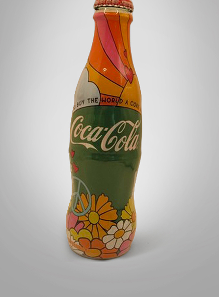

Impatto sul pubblico...
In secondo luogo, la rappresentazione multiculturale anticipa una tendenza che diventerà centrale nel marketing globale negli anni successivi. Mostrare persone di diverse etnie e nazionalità in un contesto positivo e collaborativo rafforza l’idea di Coca-Cola come brand universale, capace di parlare a tutti indipendentemente dalla provenienza geografica o culturale. Inoltre, la campagna si distingue per la sua capacità di costruire una narrazione coerente e coinvolgente. L’impatto della campagna sul pubblico è straordinario. Lo spot ottiene un’enorme visibilità e viene rapidamente riconosciuto come uno dei più efficaci esempi di pubblicità emozionale.
Ciò che la rende efficace è la sua capacità di entrare in sintonia con i valori e le aspirazioni del target, in particolare dei giovani. In un’epoca caratterizzata da conflitti e divisioni, Coca-Cola propone un’immagine alternativa del mondo, più positiva e inclusiva. Questo genera un forte coinvolgimento emotivo, rafforza il legame tra consumatore e brand e consolida il posizionamento dell’azienda. La campagna dimostra così come la pubblicità possa andare oltre la promozione del prodotto e diventare un vero e proprio fenomeno culturale, influenzando l’immaginario collettivo e anticipando molte strategie della comunicazione contemporanea.
